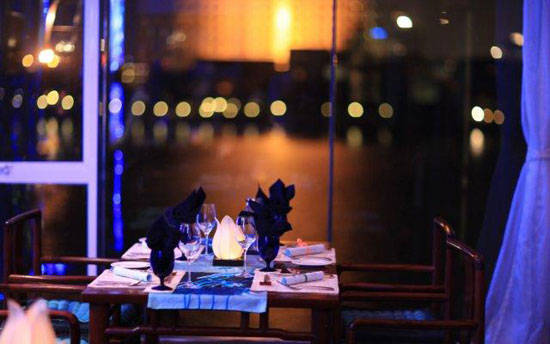

Năm 2013, Don’s từng lọt vào top “50 nhà hàng tốt nhất châu Á. Ở đây, có những món ăn tiêu biểu như:” do The Diners Club International bình chọn.
Bên cạnh thực đơn phong phú, nhà hàng còn được công nhận với đội ngũ nhân viên phục vụ chuyên nghiệp.
Cuối tuần, hãy chọn một trong những nhà hàng này rồi cùng người “đặc biệt” đến đây để thưởng thức bữa tối lãng mạn nhé.